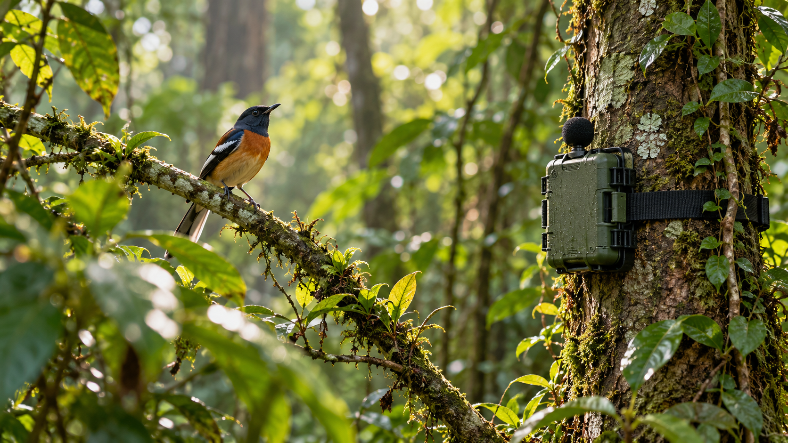
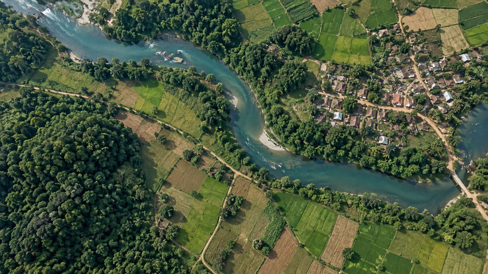

FOREST INTELLIGENCE
1
Drone
Turn drone imagery into individual tree crowns and species maps.
Explore tools that turn environmental data into understanding. From individual tree crowns to the landscapes we share.
Explore the services ↘TECHNOLOGY FOR NATURE
Tower Services is the group of small Docker apps that run compute: Drone, Bioacoustic (CEM), DIY LULC, and others. Each service does one job (tree crowns, audio, land cover). They share Airflow and STACD when a job needs orchestration.
THE SERVICE COLLECTION
Turn drone imagery into individual tree crowns and species maps.

Explore ecological monitoring through spots, species and networks.

Explore 10 m land-use and land-cover mapping over India.
SUPPORTING YOUR WORK
Shared tools and guidance for working with the services.
FROM EXPLORATION TO ACTION
Read what each service does and what you need to get started.
Open the application and follow its guidance for your data or study area.
Review the output in the tool. For completed compute runs, browse the shared output files.